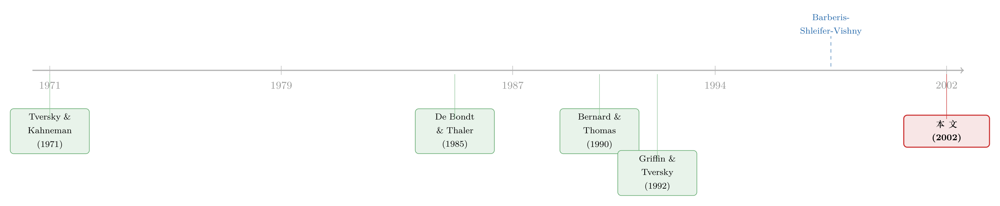

被告知是随机游走，他们还是忍不住预测下一步
本文读的是 Bloomfield & Hales (2002, Journal of Financial Economics)：他们在实验室里把 MBA 学生请来预测一段「随机游走」的下一步，结果发现——哪怕被反复告知序列完全随机、过去不含任何信息——人们依然会用「最近反转得多不多」来押注未来会不会再反转。这恰恰是 Barberis, Shleifer & Vishny (1998) 行为资产定价模型里那个最关键、却一直没被直接验证过的行为假设。
1 一个被「假设」掉的关键环节
先讲一个金融学里由来已久的尴尬。
市场一边表现出反应不足（underreaction）：盈余公告之后，价格要慢慢地、拖上好几个月才把消息消化完（这就是著名的盈余公告后漂移，Bernard and Thomas, 1990）。可市场另一边又表现出反应过度（overreaction）：连续几年表现亮眼的「明星股」，往后却系统性地跑输（De Bondt and Thaler, 1985, 1987）。
同一个市场，怎么会既「慢半拍」又「太激动」？
Barberis, Shleifer and Vishny（1998，下称 BSV）给出了一个极其漂亮的调和。他们假设：投资者面对的明明是一个随机游走的盈余过程，心里却坚信它不是。投资者认定盈余在两种「机制」（regime）之间来回切换——一种是均值回归机制（mean-reverting regime），变化倾向于被反向修正；另一种是趋势机制（trending regime），变化倾向于被同向延续。于是，投资者会用「最近这些变化里有多少是反转」来反推现在身处哪种机制：反转多，就以为进入了均值回归区，于是对新消息反应不足；反转少（也就是一路同向走），就以为进入了趋势区，于是对长期走势反应过度。
一个假设，两种异象，天衣无缝。
但真正关键的一步在于——这套「机制切换信念」（regime-shifting beliefs）从头到尾只是一个假设。BSV 用心理学文献作动机：人们确实会在随机序列里「看出」并不存在的图案。可问题是，同一批心理学结论，能推出的「错误」远不止 BSV 这一种。人们也可能盯着最近的趋势、预期它继续（De Bondt, 1993）；也可能相信「反转期之后跟着趋势期」。这些错误同样「符合心理学」，却会导出和 BSV 完全不同的价格行为。
于是 Bloomfield and Hales 提出的问题，朴素得近乎苛刻：
2 研究问题：人到底会不会用「反转率」去赌反转？
注意，他们要测的不是「人会不会偏离随机游走」——这一点几乎不用测，人当然会偏离（可能因为相信自己能预测，也可能只是手痒想交易，见 Black, 1986 的「噪声交易者」）。他们要测的是一件更窄、更尖锐的事：人们的偏离，方向上是否随「最近反转率」系统性地变化？
换句话说，BSV 模型成立的充要行为条件是一句话：
最近反转越多 → 越预期下一步还会反转（反应不足）；最近反转越少 → 越预期下一步会延续（反应过度）。
这正是实验金融的用武之地。真实市场里，「反转率」和无数别的东西纠缠在一起，你永远没法把这一条因果干净地拎出来。但在实验室里，研究者可以亲手把序列的反转率拨到任意水平，再看人的下注怎么变——这是一种近乎完美的外生变异（exogenous variation）。
3 实验设计：把「随机」明明白白写在脸上
他们从 Cornell 的 Johnson 商学院招来 38 名 MBA 学生。每个人看 16 张图，每张图画的是某个序列「最近八期」的走势。看完一张，参与者要为一只证券报价：如果序列下一步向上，这只证券值 $100（实验室美元），向下则值 $0。
这里有两处设计精妙到必须停下来讲。
第一处，定价机制。 他们用的是 Becker, DeGroot and Marschak（1964，下称 BDM）机制的一个变体：你报一个价 P，系统会让你在所有「不高于你报价」的价位上各买一股、在所有「不低于你报价」的价位上各卖一股。这套机制的妙处在于——对一个风险中性的人来说，最优策略就是把报价设成自己心里「上行概率」的估计值。而既然序列是真随机游走，上行概率永远是 50%，所以正确答案永远是报价 50。任何对 50 的偏离，都是行为的指纹。
我们可以把它写成那只证券的价值锚：
$$ V_t = \frac{N_t}{d} $$
其中 \(N_t\) 是最近一期的盈余数字，\(d\) 是固定贴现率——这是 BSV 设定里公司价值随盈余做随机游走的来源。盈余是随机游走，价值就是随机游走，下一步的方向无从预测。
第二处，也是全文最硬气的一刀——他们把「这是随机游走」明明白白告诉了参与者。 投资者被清清楚楚地告知：变化遵循随机游走，过去的结果对预测未来毫无价值。原话甚至写着：「随机游走序列里几乎总会出现可辨认的图案。然而，由于这些图案随时可能剧变，统计模型仍然无法预测未来。」
为什么要做这一刀？因为它把测试的「门槛」抬到了极致。如果你只是含糊地让人去观察序列、自己摸索规律，那么就算他们表现出 BSV 式的信念，你也可以辩解说「他们只是观察的样本还不够多」。但当你把答案直接塞到他们手里、他们仍然忍不住去赌图案——这才是 BSV 假设最强的证据：人即便理智上知道是随机的，行为上也不信。
最后一处巧思是情境操纵（between-subject）。一半人被告知序列来自「抛硬币」模型（coin context），另一半被告知来自某家上市公司的「业绩惊喜」模型（firm context）。理由是：人也许更愿意在「公司盈余」里看出门道，而不愿在「抛硬币」里看出门道。这一刀，是为了检验 BSV 式信念是不是依赖于某种「因果故事」。
序列怎么造？他们从一段长随机游走里挑出 8 段八期序列，反转数分别是 0, 1, 3, 4, 6, 7；再把每段「镜像翻转」（每个上行换成下行，反之亦然）得到另外 8 段，凑成 16 段。于是「反转数」和「朝向」都成了被试内（within-subject）变量。
4 核心度量：把「过度」和「不足」拧成一个符号
要检验 BSV，先得有一把能同时量出「过度反应」和「反应不足」的尺子。Bloomfield and Hales 的做法是：把每个报价先减去中性价 50，再按「最近一步变化的方向」给它定符号——让过度反应为正、反应不足为负。
直觉是这样的：假如最近一步是上行，而你把价报到 50 以上（看涨），说明你预期「涨势延续」，这是过度反应，符号取正；你若报到 50 以下（看跌），说明你预期「马上反转」，这是反应不足，符号取负。最近一步是下行时，符号规则对称地翻过来。这样一来，Reaction 这个单一数字的正负，就干净地编码了「延续信念 vs 反转信念」。
BSV 的预测，翻译成这把尺子，就是一句极清晰的话：Reaction 应当随反转数单调递减。
5 结果：一条漂亮的下行斜线
结果几乎是教科书式的干净。把 16 段序列按反转数归成三类——少（0 或 1）、中（3 或 4）、多（6 或 7）——平均反应如下：
- 少反转序列：参与者过度反应，平均
+11.2； - 中反转序列：平均
+0.9，基本贴着零； - 多反转序列：参与者反应不足，平均
−6.9。
把每个参与者在三类里各自的平均反应拿来做 t 检验：少反转的过度反应、多反转的反应不足，两者都在 p<0.01 上显著异于零；中反转那一档则毫无显著性（p>0.8）。而少、中、多三档两两之间的差异，也全都在 p<0.01 上显著。一条随反转数下行的斜线，几乎就摆在那里。
为了不被「同一个人做了多次决策」造成的数据相关性误导，他们又做了一个重复测量方差分析（repeated-measures ANOVA），相当于把每个参与者只当成一个观测，避免虚高样本量。控制掉其余变量后，反转水平极其显著（p<0.0001）；而情境（硬币 / 公司）和呈现顺序都不显著。他们还查了参与者的从业经历、金融会计课程、毕业去向——没有任何证据表明「反应与反转的关联」会因这些而改变。换句话说，连华尔街背景都救不了你：人对随机性的这点执念，是相当普遍的。
唯一的小插曲是「朝向」效应（p=0.0426）和「朝向 × 反转」交互（p=0.0046）。但这主要由中反转的 E、F 两段驱动——比如 E 段（三个反转）在最后一步上行时过度反应 1.58、下行时却反应不足 17.89——而它既没有制造、也没有抹掉反转的主效应。两个朝向下，「少反转→过度、多反转→不足」的格局都稳稳成立。
6 反转出现在哪里：第二个实验，与一个意味深长的不对称
第一个实验是横截面的：把一堆互不相干的序列摆在你面前，看你的反应和反转率的关联。但 BSV 的故事其实是纵向的——同一条序列，会在趋势区和回归区之间来回切换。于是第二个实验登场：还是同一批人，这次只看一条 80 期的序列，每期给你看「最近 30 期」的滚动窗口，连做 50 次预测。
结论与第一个实验一致：当滚动窗口里最近的反转少，人就更倾向于押延续。而且在公司情境下的参与者更常报告「我在找图案」，也更倾向于觉得这条序列「不太稳定」——这恰好说明 BSV 式信念确实和人对「背后是什么过程」的想象挂钩。
但真正值得玩味的，是一个不对称。BSV 模型要同时产出过度反应和反应不足，有一个隐含的参数条件：投资者不能对「趋势机制」抱有太高的无条件先验。而在这个实验里，要相当高的反转率，才能把人逼到反应不足那一侧。结果就是——过度反应俯拾皆是，反应不足却寥寥无几。
这个不对称很重要：它说明，BSV 那套机制要在现实里同时解释两种异象，对「人有多容易相信趋势」是有定量要求的。实验室里的人，似乎天生更爱「追涨」而非「抄底」。这也呼应了行为金融里一个长期的张力——到底是外推（追涨）的力量更强，还是反转（抄底）的力量更强？（关于把这两股力量在实验室里直接量出来，可参见《外推者与逆向者：一把在实验室里量出来的尺子，丈量真实世界的买卖》。）
7 文献脉络
这条线的源头，是认知心理学对「人如何误判随机性」的两记重锤。Tversky and Kahneman（1971）提出「小数定律的迷信」（belief in the law of small numbers）——人误以为小样本也该长得像总体；随后他们（1974）把启发式与偏差系统化，Kahneman and Tversky（1973）又给出代表性启发式（representativeness）。这一脉最脍炙人口的实证，是 Gilovich, Vallone and Tversky（1985）对篮球「手热」（hot hand）的解剖：球员的连续命中，多半只是随机序列的错觉。再往后，Griffin and Tversky（1992）把「证据的强度 vs 权重」拆开，解释了人何时过度自信、何时反应不足。

与此并行的，是金融学这边的两个异象：De Bondt and Thaler（1985, 1987）记录了长期过度反应，Bernard and Thomas（1990）记录了盈余公告后的反应不足漂移。BSV（1998）的贡献，正是用一个「机制切换信念」把心理学的洞见和这两个异象焊在一起。同期还有 Daniel, Hirshleifer and Subrahmanyam（1998）从过度自信出发的另一套机制，以及 Fama（1998）那篇著名的「行为金融的异象多半是数据挖掘」的反击。值得一提的是 Rabin（2002）——他用同一批心理学素材，搭出的却是另一个形式化模型：预测基于样本比例，而非 BSV 的反转率。这正点出了 Bloomfield and Hales 的价值所在：在一堆都「符合心理学」的候选机制里，他们用实验把反转率这一条单独验明正身。
这篇论文所处的位置，因此很清楚：它不是又一个理论，也不是又一组市场数据回归，而是对一个被广泛引用的理论模型的核心行为假设，做了一次直接、干净的实验室验证。（这条用实验法逼问行为假设的路，至今仍很活跃，比如把同样的「过度反应」搬到团队决策里去看会放大还是缓和，见《三个臭皮匠，反而没那么容易上头？》。）
8 评论与延伸（Q&A + 研究方向）
(a) 几个可能的疑问
Q：被告知「这是随机游走」之后人还预测，会不会只是没看懂或不信指令？
作者把这一点当成特性而非 bug。BDM 机制下，正确答案永远是报价 50；任何对反转率的系统性响应，都不可能由「没看懂规则」解释——因为所有比较都是同一个人在不同序列下的报价之差，理解偏差会被差分掉。他们还在正式任务前强制参与者答对一组理解题。所以「不信随机」恰恰是结论本身。
Q：这和「人会在随机里看图案」（hot hand 那一套）有什么新意？
区别在精度。Gilovich et al.（1985）证明的是人会看出图案；本文证明的是人看出的是哪一种图案——具体到 BSV 模型里那个唯一关键的变量：反转率。同一批心理学，能推出追涨、能推出「反转后接趋势」等一堆错误，但只有「用反转率赌反转」才支撑 BSV。本文把这一条单拎出来钉死了。
Q：硬币情境和公司情境结果没差别，是不是说「叙事」无关紧要？
不完全是。主效应（反转率驱动反应）在两种情境下都成立，所以核心信念不靠特定叙事。但在实验二里，公司情境下的人更常报告「在找图案」、也更觉得序列不稳定。所以叙事不改变信念的方向，却可能调节它的强度与自觉程度。
Q：为什么过度反应一大堆、反应不足却很少？这是不是反而打了 BSV 的脸？
是个温和的警告。BSV 要同时产出两种异象，需要投资者对「趋势机制」的无条件先验不能太高。实验里要很高的反转率才逼出反应不足，意味着真实参数可能偏向「人太爱信趋势」。这不否定机制，但提示：用 BSV 解释市场时，对「趋势先验」的标定要小心。
Q：38 个 MBA 学生、实验室报价，凭什么外推到真实市场？
这是实验法永远的软肋，作者也坦承。但要看你想证什么。他们要证的是「人这种生物会不会用反转率赌反转」这一行为命题，而非「市场价格的具体幅度」。对行为命题，受控实验的内部效度恰恰比脏兮兮的市场数据更可信；幅度与定价含义，则留给后续与档案数据的对接。
Q：报价对 50 的偏离，会不会主要是「手痒想交易」而非真信念？
作者早料到了，所以他们不检验偏离是否存在（那可能源于噪声交易、风险偏好等等），只检验偏离的方向是否随反转率系统变化。手痒、随机犯错这些都不带方向性，无法解释一条随反转数单调下行的斜线。
(b) 几个可能的研究问题与提案
1. 把「反转率信念」搬进公司债 / 信用市场。 【经济故事】股票市场的过度/反应不足已被反复检验，但信用利差对「连续几次评级或盈余反转」的反应几乎没人从 BSV 视角看过。若债券投资者也用反转率赌反转，那么信用利差对「一路同向恶化」的发行人会过度反应、对「反复横跳」的发行人会反应不足。 【可行性】中。数据可用 TRACE 成交 + 评级/盈余历史；识别上可借鉴本文的「按反转率分组」思路，但市场数据里反转率与基本面纠缠，需要用工具或事件窗口净化，doable 但不轻松。
2. 外资持有人是否携带不同的「随机性误判」？ 【经济故事】本文发现连华尔街背景都不改变反转率信念。但跨文化样本（如把实验在不同国家重做）也许能揭示「机制切换信念」的强度差异，进而解释为何某些市场的动量/反转格局更强。 【可行性】中高。实验本身极易复制（成本低、协议公开）；难点是把实验室差异与真实市场的外资行为对接，这一步识别较弱。
3. 流动性是否放大了反转率信念的价格后果？ 【经济故事】信念要变成价格，得有人真去交易。在流动性差、套利受限的标的上，BSV 式信念可能更不易被纠偏，从而在低反转（追涨）情形下制造更大的错误定价。 【可行性】中。可把本文的「反转率」度量构造到个股层面，与 Amihud 非流动性交互，检验「低反转 × 低流动性」组合的后续反转幅度是否最大。数据现成，识别靠横截面交互，doable。
4. 把实验信念直接「校准」进一个 BSV 式定价模型。 【经济故事】本文给出了反转率→反应的经验斜率（少反转 +11.2、多反转 −6.9）。能否把这个实测的信念函数直接喂进 BSV 的定价框架，看它能复现多大比例的真实漂移与长期反转？这是一次「实验参数 → 资产定价」的硬对接。 【可行性】中低。理论上漂亮，但实验报价的标度（实验室美元、0–100）与真实预期收益之间如何映射，是个棘手的标定问题；结论对映射假设敏感。
5. 团队 / 算法决策能否驯服反转率信念？ 【经济故事】若个体天生用反转率赌反转，那么把决策交给团队、或交给明确告知「这是随机」的算法辅助，能否削弱它？这关系到机构投资者是否比散户更不易被随机性误导。 【可行性】高。直接在本文实验上加一个「团队 / 算法提示」处理组即可，成本低、识别干净，是最容易落地的一个方向。
参考文献
- Barberis, N., Shleifer, A., Vishny, R. (1998). A model of investor sentiment. Journal of Financial Economics 49(3), 307–343.
- Becker, G.M., DeGroot, M.H., Marschak, J. (1964). Measuring utility by a single-response sequential method. Behavioral Science 9(3), 226–232.
- Bernard, V.L., Thomas, J.K. (1990). Evidence that stock prices do not fully reflect the implications of current earnings for future earnings. Journal of Accounting and Economics 13(4), 305–340.
- Black, F. (1986). Noise. Journal of Finance 41(3), 529–543.
- Bloomfield, R., Hales, J. (2002). Predicting the next step of a random walk: experimental evidence of regime-shifting beliefs. Journal of Financial Economics 65(3), 397–414.
- Daniel, K., Hirshleifer, D., Subrahmanyam, A. (1998). Investor psychology and security market under- and overreactions. Journal of Finance 53(6), 1839–1885.
- De Bondt, W.F.M., Thaler, R. (1985). Does the stock market overreact? Journal of Finance 40(3), 793–805.
- De Bondt, W.F.M., Thaler, R. (1987). Further evidence on investor overreaction and stock market seasonality. Journal of Finance 42(3), 557–581.
- Fama, E. (1998). Market efficiency, long-term returns, and behavioral finance. Journal of Financial Economics 49(3), 283–306.
- Gilovich, T., Vallone, R., Tversky, A. (1985). The hot hand in basketball: on the misperception of random sequences. Cognitive Psychology 17(3), 295–314.
- Griffin, D., Tversky, A. (1992). The weighing of evidence and the determinants of confidence. Cognitive Psychology 24(3), 411–435.
- Kahneman, D., Tversky, A. (1973). On the psychology of prediction. Psychological Review 80(4), 237–251.
- Rabin, M. (2002). Inference by believers in the law of small numbers. Quarterly Journal of Economics (forthcoming).
- Tversky, A., Kahneman, D. (1971). Belief in the law of small numbers. Psychological Bulletin 76(2), 105–110.
- Tversky, A., Kahneman, D. (1974). Judgment under uncertainty: heuristics and biases. Science 185(4157), 1124–1131.
我的判断。 这篇论文的贡献，不在于发现了什么新异象，而在于它对一个被反复引用、却从未被直接验证的行为假设，做了一次近乎完美的受控验证。它最聪明的地方是把测试钉在 BSV 唯一关键的变量「反转率」上，并用「明确告知随机」把门槛抬到极致——这一刀让结论格外有力。对识别的担忧，我有两点：其一是外部效度，38 个 MBA、实验室报价距离真实的大额、有反馈、有学习的市场仍然遥远，反转率信念在反复交易中会不会被纠偏，本文回答不了；其二是那个「过度反应远多于反应不足」的不对称，它温和地提醒我们，BSV 用同一机制解释两种异象，对参数的要求并不宽松。后续我最想看到的，是把这把实验测出的信念斜率，接到真实市场的资产上——尤其是流动性差、套利受限的信用市场，看「用反转率赌反转」究竟能转化成多大比例的真实错误定价。